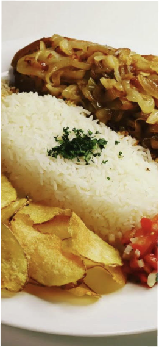
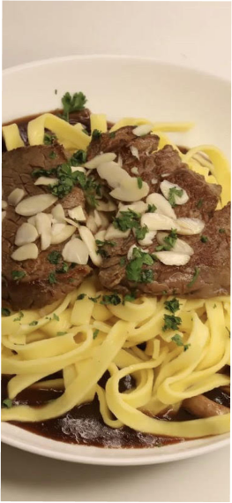
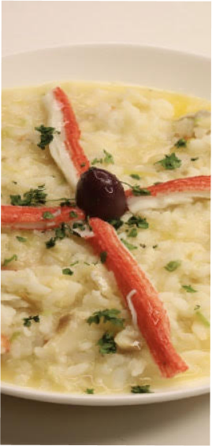
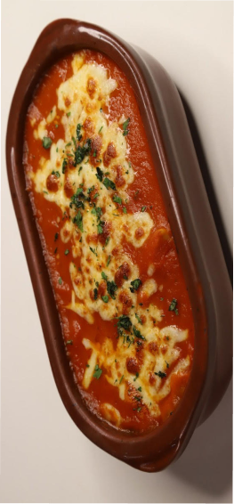

HISTÓRIA DA NOSSA CRIAÇÃO
Raissa sempre sonhou em abrir seu próprio restaurante. Ela cresceu em uma família de cozinheiros e aprendeu desde cedo o valor da comida bem preparada e do amor que ela pode traz Depois de anos trabalhando em restaurantes renomados e estudando administração, Raissa finalmente decidiu que era hora de transformar seu sonho em realidade.Ela investiu todo seu tempo e economias na criação do seu próprio restaurante, que apresentaria uma culinária única e um ambiente acolhedor. Raissa trabalhou duro na elaboração do menu, valorizando ingredientes frescos e sazonais. Os primeiros meses não foram fáceis, mas Raissa não desistiu. Ela se dedicou incansavelmente à administração do restaurante, contratando funcionários e gerenciando as finanças com cuidado.Com o tempo, o restaurante começou a ganhar uma base sólida de clientes fiéis, que apreciavam a comida deliciosa e o ambiente acolhedor. Raissa se esforçou para manter a qualidade da comida e o atendimento impecável.Hoje, muitos anos depois, o restaurante de Raissa é um dos mais populares da cidade, atraindo clientes de todo o mundo em busca de uma experiência gastronômica única e memorável. Raissa continua a trabalhar duro para oferecer aos seus clientes o melhor em sabor e qualidade, sabendo que seu esforço e dedicação valeram a pena.
- 
PICANHA ACEBOLADA
- 
TALHARIM ESPECIAL
- 
RISOTO DOD CHEF'S
- 
PARMEGIANA FRANGO